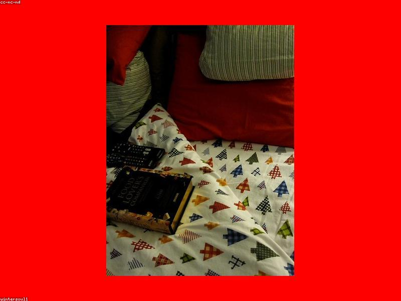

La importancia de dormir bien

En nuestra sociedad, a menudo se glorifica la falta de sueño como símbolo de productividad. Sin embargo, dormir bien es posiblemente la acción más saludable que puedes realizar.
¿Por qué es tan importante?
Durante el sueño, tu cuerpo no solo descansa, sino que se repara:
- Regulación hormonal: El sueño ayuda a controlar las hormonas que regulan el hambre (grelina y leptina), lo que facilita mantener un peso saludable.
- Recuperación mental: El cerebro procesa y consolida la información del día, mejorando la memoria y la concentración.
- Fortalecimiento del sistema inmune: Un buen descanso es clave para evitar enfermarte con facilidad.
Hábitos para mejorar tu descanso
No necesitas pastillas ni rituales complejos para dormir mejor. Intenta lo siguiente:
- Mantén un horario regular: Acuéstate y levántate a la misma hora todos los días, incluso los fines de semana.
- Crea un ambiente relajante: Tu habitación debe estar oscura, fresca y en silencio.
- Evita pantallas antes de dormir: La luz azul de los teléfonos y tablets interfiere con la producción de melatonina. Intenta leer un libro físico en lugar de usar el móvil.
Recuerda: dormir no es perder el tiempo, es la mejor inversión para tu salud diaria.